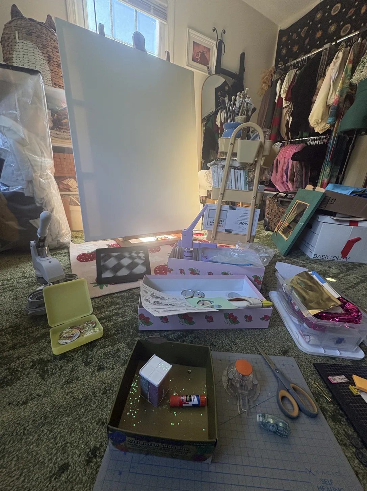
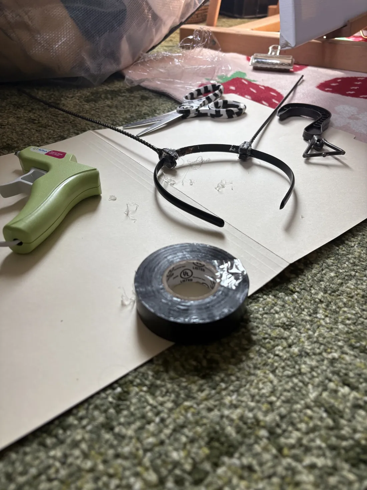
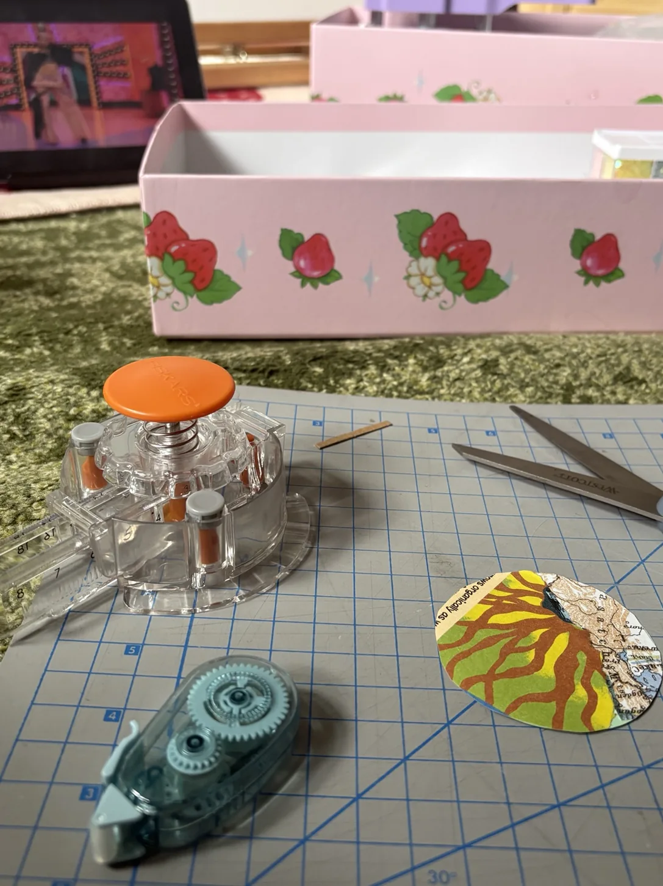
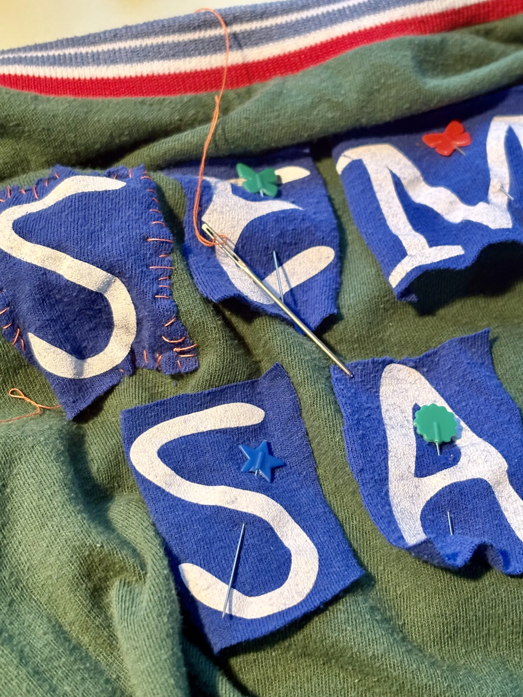
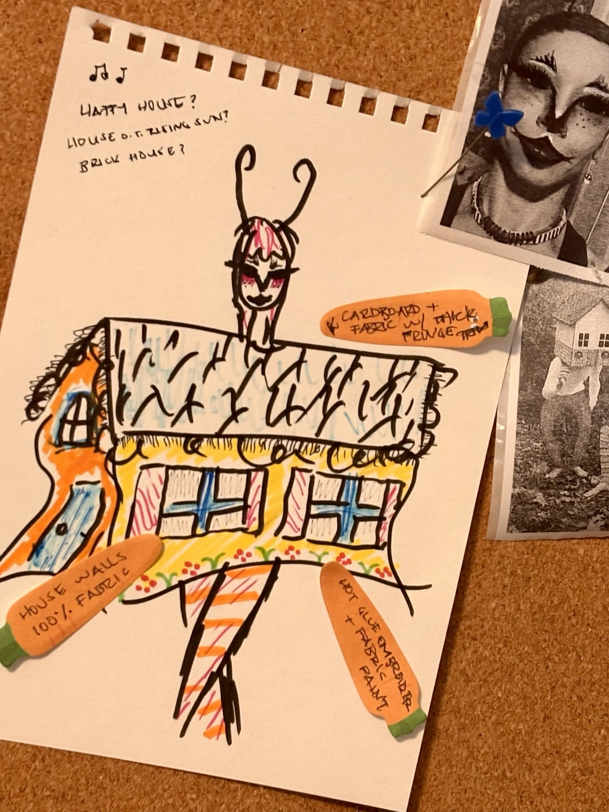
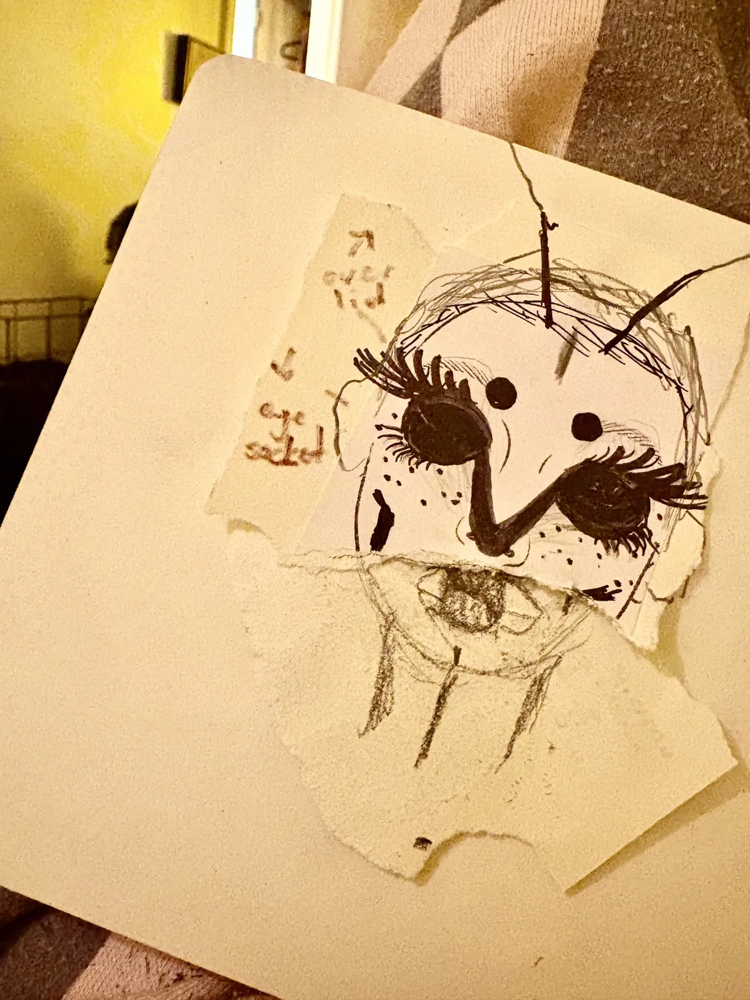
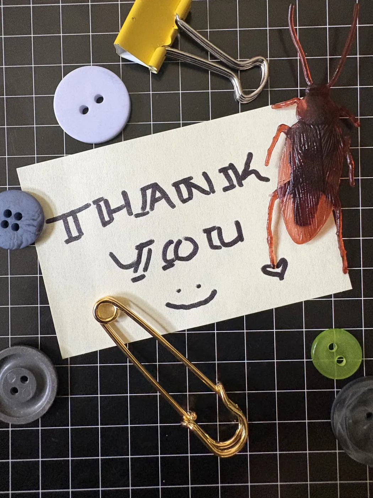

wtf is roachcraft, eh?
an ongoing experiment in making things without demanding purpose from every impulse; i can explain →
some things are worth doing simply because they might become interesting.
desk 01 / pending thoughts
words, processes, & other evidence of activity.
please excuse the state of the desk.
an ongoing experiment in making things without demanding purpose from every impulse; i can explain →
some things are worth doing simply because they might become interesting.
stuff is in various states of becoming things.
state: cluttered. can become hard to think upon prolonged exposure. feels counter-productive at a threshold.
likely improvements following final unpack... migration is a bitch for bugs with an attention-deficit.

found some discarded carbon.
(detachable hang-hook from one of those store-bought, came-with-the-plant, plastic hanging pots)
decided i deserved fresh feelers since original antennae have zero movement & are more retracted/spiral-y. it's essential that any antennae are able to extend & engage with the environment. they're responsible for like all of my senses.
results: considerably more playful, aerodynamic, in dust as well as in spirit.

arranging possibilities
& a circle-cutter i would kill over.
just kidding (maybe)
i really don't know how i managed so long without one. the amount of time this fucker saves me when cutting button bases is absolutely non-negotiable.
i would not be able to lock into my flow state when making pins/buttons & flow state is my doorway to intuitive making.

repurposing old messages to communicate something new puts a special sparkle in these beady eyes.
always searching wildly for more refuse; i will never escape needing additional material, for additional possibilities.
do you have unwanted letter-tees? old work shirts? can i have them? give them to me →

a window into my look-workshopping process. i am not a costume designer by training nor trade. i am a cockroach. for better or worse, i still insist on creating looks with my own appendages.
possible materials: cardboard, fabric, hot glue, rhinestones, & optimism

preliminary considerations regarding the final molted appearance of a cockroach. been workshopping my face for awhile now. literally puzzling scraps of different iterations together.
major influences include: Heian-period Japan, the Peking opera, gender-fuckery & blattidae anatomy
not swooning over the attached mock-up. however, its beginning to feel very right. still incredibly indecisive about doing a white base; keeping my complextion feels better for several reasons.
sclera lenses: acquired.
giant eldora lashes: aqcuired.
black liner/shadow: trembling in fear.
subject to further experimentation.
next phase: in vivo.

evidence of gratitude & appreciation for house guests minding their step, observing space for a cockroach, & sharing in this curated collection-experience of shapes.

prototype / not yet encrypted
oh. that's where that went.